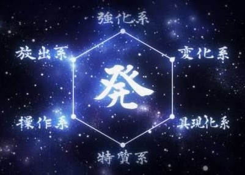

Nen is the power system of Hunter x Hunter. there are multiple levels of understanding to nen, but in a general sense, it's an energy tied to ones life force and personality, which they can use to achieve superhuman feats. in the world of Hunter x Hunter, all occurrences that are seen as supernatural, as well as most acts of genius, are caused by some application of nen. One of the requirements, as well as the only hidden requirement, to being a pro hunter is proficiency in nen. Its existence is kept a secret from general society due to the chaos superhuman criminals would cause
use of nen is the application of a life force that flows through all creatures. there are 2 known ways to develop nen. one can either survive an attack infused with nen (called initiation, or babtism), and have their 'aura nodes' forcefully opened, or they can spend a great deal of time painstakingly training to consciously open and close said nodes. While initiation is significantly faster and easier, the risks involved mean that hardly anyone opts for this method. Should the teacher not be skilled enough, or the student talented enough, initiation can very easily lead to death or debilitating injury. Nen is not only tied to one's life force, but also their mental state (this will be important when we discuss nen types, conditions, and post-mortem nen)
Ten is the rest state of a nen user. a state of ten prevents the life force that would normally leak off of an individual from escaping, and instead, envelops them in a shroud that feels a bit like lukewarm water. This helps defend against aging, emotional nen attacks, and some degree of physical attack
zetsu is the complete cessation of external nen flow. this has the benefit of enhanced recovery from fatigue, better nen sensitivity which makes it easier to track nen users, and the weakening or outright elimination of one's presence. The negative to this technique is that, while you are in zetsu, you're as vulnerable to nen as a normal person
ren is the opposite of zetsu, where instead of internalizing all your aura, you output much more than your body's baseline. this is the power-up application. A strong ren means a strong fighter, and it's the nen equivalent to strenuous aerobic exercise
Hatsu is one's personal expression of nen. It is also the most complicated aspect of nen, and will be explained further here
The advanced techniques are, as the name implies, advanced applications of the 4 major principles
gyo is an application of ren where one focuses a larger portion of the aura to one part of their body, strengthening it but weakening the defenses elsewhere. Gyo's most common application is strengthening the eyes so one can see aura hidden via in
in is an advanced form of zetsu, which hides the aura from observation, rather than stop the flow outright
An advanced application of ten and ren, en acts sort of like a sphere which can be used to detect nen users, even ones using zetsu. En is extremely tiring, however, and isn't usually suitable for extended use
shu is an application of ten, where a user extends their aura to cover an object, strengthening it and allowing them to use it as an extension of their body
a combination of ten, zetsu, hatsu, ren, and gyo, where a user concentrates all their aura into a single point to make one extremely powerful attack, at the cost of forgoing any sort of defense.
a combination of ren and ten, ken is an armor created by making a (usually 10x) larger ten
Ryu is a combination of gyo and ken that allows for real-time adjustments between offense and defense. if used improperly, ryu could cause injury which could have been prevented with ken, or stereograph your attacks, allowing for easy counter-attacks
all Nen abilities fall into a combination of 6 nen types, and your affinity with the types dictates how difficult it will be to learn their techniques
you can determine what your nen type is through either of 2 techniques. water divination is the commonly accepted method. to conduct water divination, get a glass of water, float a leaf on the water, and funnel your aura into the glass
there's also Hisoka Morrow's personality test
transmuter abilities involve changing your aura into a different forms, such as Lightning, thread, fire, or Bungee Gum. notable transmuters are Hisoka, feitan, Machi, Killua, and Biscuit
Conjurer abilities focus on creating objects from one's aura. these objects can be anything you can imagine, but you have to imagine all of their traits. To make his signature chains, Kurapika had to observe chains with all 5 senses until he started dreaming of chains
Enhancers have the simplest